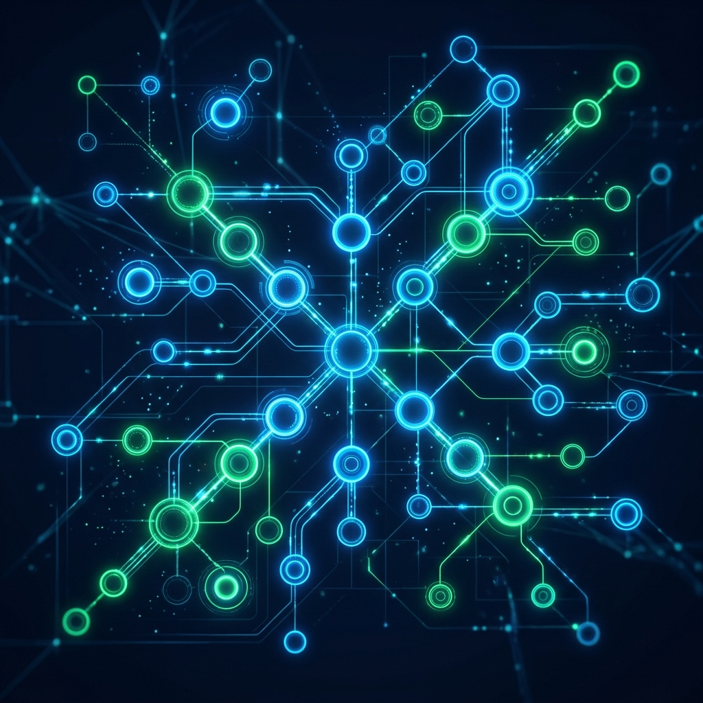
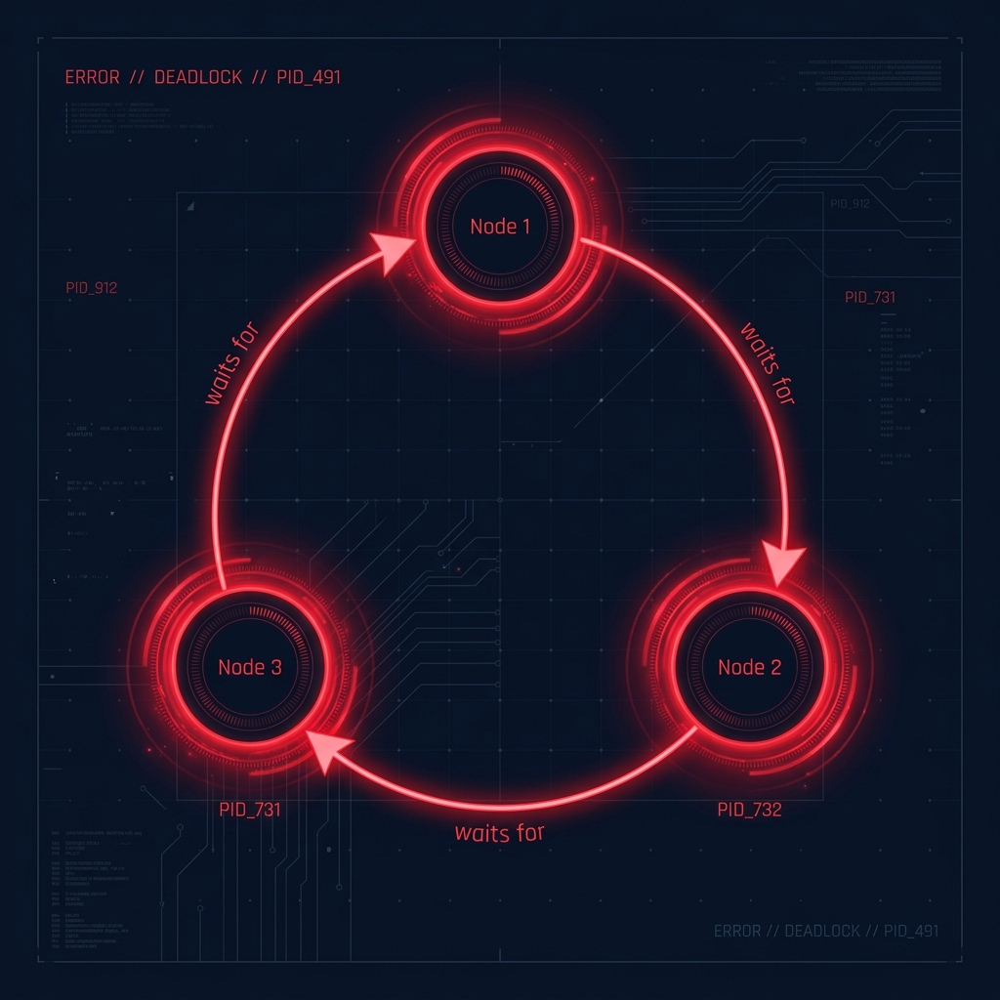

A comprehensive inter-process communication debugger that provides animated topology visualization, deadlock detection using Wait-For Graphs, bottleneck analysis, and race condition monitoring — all in real time.

Six powerful analysis tools working together to give you complete visibility into inter-process communication.
60fps real-time visualization of your process topology with smooth position interpolation, interactive node dragging, and pulse animations for active message transfers.
Builds Wait-For Graphs using NetworkX and detects ALL circular dependencies via cycle detection. Visual glow rings highlight deadlocked processes instantly.
FIFO-based latency calculation, queue depth monitoring, and throughput ratio analysis to identify performance bottlenecks before they crash your system.
Sliding-window algorithm detects concurrent access to shared resources. Flags read-write and write-write conflicts within configurable time windows.
Matplotlib-powered charts showing latency distributions, throughput over time, queue depth history, and per-channel performance breakdowns.
Generate HTML reports, CSV logs, PNG graphs, and metrics snapshots. Complete audit trail with timeline visualization and message browser.
From configuration to analysis in four simple steps — or load a pre-built scenario with one click.
Define your process topology — add producers, consumers, and bidirectional processes. Set behaviors, priorities, message content, and operation delays. Create synchronization primitives like semaphores and locks.
Wire your processes together using three IPC mechanisms: Pipes for 1-to-1 communication, Queues for buffered FIFO channels, and Shared Memory for direct memory access. Each channel is tracked independently.
Start the simulation and watch your processes communicate in real time on the animated canvas. Control speed (0.25x — 5x), pause/resume individual steps, and observe message flow via pulse animations along edges.
Run deadlock detection to find circular waits, bottleneck analysis to spot slow consumers, and race condition detection to find unprotected shared access. View results in charts, timelines, and exportable reports.
Built with production-grade Python libraries and modern software engineering patterns.
Core language — threading, dataclasses, type hints
Desktop GUI framework with custom dark theme
Graph algorithms — cycle detection, WFG analysis
Performance charts — latency, throughput, depth
Multi-threaded process simulation with events
AppServices container for modular architecture
Explore the architecture, algorithms, and design patterns that power the IPC Debugger.
7 packages with clear separation of concerns
Wait-For Graph with hash-based caching

# Cached cycle detection (O(1) when unchanged) def detect_deadlock(self, pids): edges = self.sync_manager.get_wait_for_edges() current_hash = self._compute_hash(pids, edges) if current_hash == self._cache_hash: return self._cached_edges # 99% faster self.build_wait_for_graph(pids) cycles = list(nx.simple_cycles(self.wfg)) return self._extract_edges(cycles)
Thread-per-process simulation with retry logic
# Custom exception hierarchy class ProcessException(IPCDebuggerError): ... class LockTimeoutException(ProcessException): ... class ChannelException(ProcessException): ... # Behavior loop with granular error handling try: self._acquire_locks_with_retry() while not self._stop_event.is_set(): if behavior == "producer": self._do_send_safe(iteration) elif behavior == "consumer": self._do_receive_safe() except ChannelException: # Retry with backoff time.sleep(0.1)
Dirty-flag optimization with thread-safe state
# Thread-safe node state with locking class _NodeState: def get_snapshot(self) -> dict: with self._lock: return {"cx": self.cx, "cy": self.cy, ...} # Animation loop skips unchanged frames def _animate(self): moved = self._update_positions() has_pulses = self._update_pulses() needs_redraw = ( self._dirty_topology or moved or has_pulses or self._frame_count % 30 == 0 ) if needs_redraw: self._draw_frame()
Launch the IPC Debugger and start visualizing inter-process communication in real time.